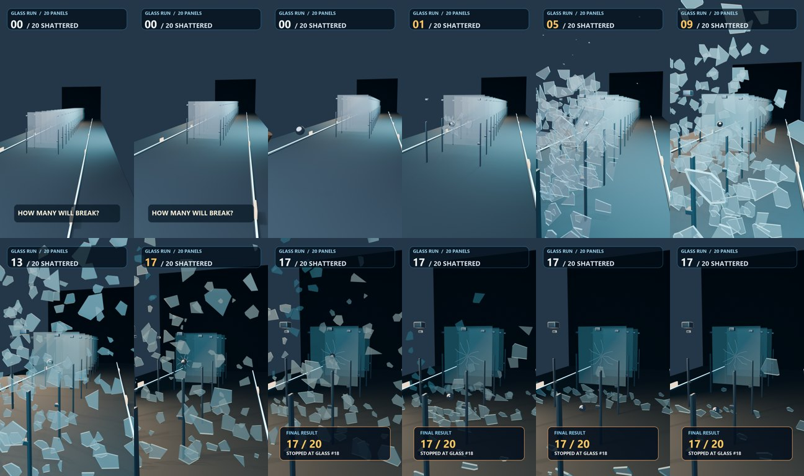

유리판 20장 관통 — V2 / V3
동일한 8초, 24프레임, 720×1280. V3는 유리 파편 두께의 차이, 투명도, 충돌 직후의 균열과 미세 조각을 추가했습니다. 17장 관통은 연출용 계산 결과입니다.
V2 · 기존
V3 · 개선
V3 주요 장면

동일한 8초, 24프레임, 720×1280. V3는 유리 파편 두께의 차이, 투명도, 충돌 직후의 균열과 미세 조각을 추가했습니다. 17장 관통은 연출용 계산 결과입니다.
